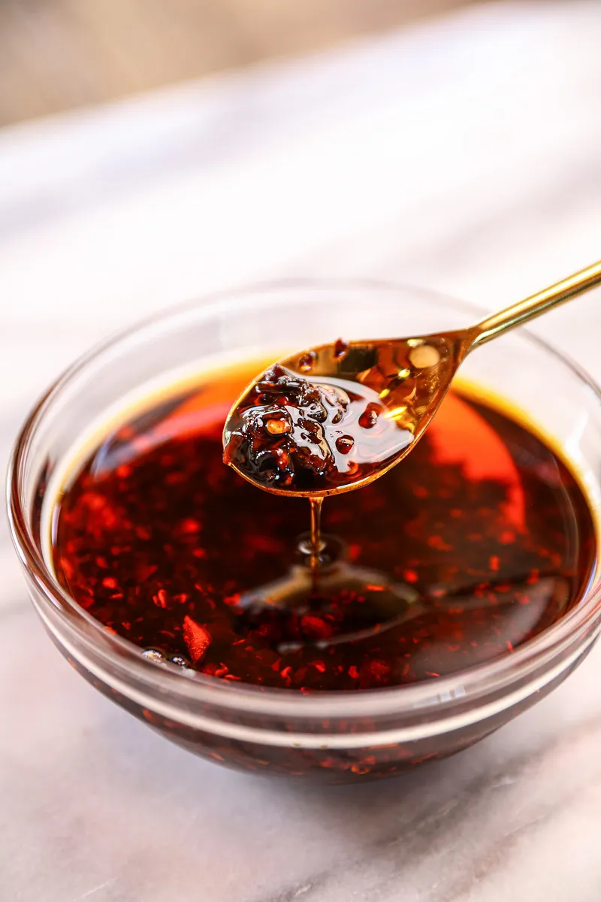

Description
Extra chili oil means, it's extra smokey, extra spicy, extra flavorful, and extra delicious!
For the extra googness, we need to give them a little extra effort and time too. You know,
more care and love you put into the food, it will definitely pay you back with satisfying flavors and deliciousness!
Ingredients
For the Flavor Oil
- 2 oz ginger slices
- 12 cloves garlic, crushed
- 1 onion
- 2 tbsp Sichuan peppercorns
- 1 bay leaf
- 3 cups neutral oil (I like to use avocado oil. You can also use vegetable, canola,
grapeseed, or peanut oil)
- 1/2 cup chili flakes (I use Thai chili flakes for extra spicy, you can use regular red pepper flakes)
For the Chili Oil
- 3 tbsp neutral oil
- 1/2 large onion, chopped
- 3 tbsp soy sauce
- 3 tbsp toban djan, Chinese chili bean paste
- 1/2 cup chili flakes (I usue Thai chili flakes for extra spicy, you can use regular red pepper flakes)
- 3 tbsp gochugaru, optional
- 2 tbsp fermented black beans, optional
- 2 tbsp sugar
- 1/2 tsp msg or mushroom powder
- A pinch of salt
Directions
-
Combine the ginger, garlic, onion, Sichuan peppercorns, bay leaf, and oil in a saucepan.
Turn the heat to medium and let it simmer for 15 to 18 minutes or until all the veggies are brown.
-
Meanwhile, toast red pepper flakes in a dry pan until it's darkened and smokey, about 4 to 5 minutes. Add into the flavoried Oil
and keep simmer until everything in the oil becomes dark brown, about 12 minutes.
-
Heat a wok or a pot over high heat, add 3 tbsp neutral oil, and chopped onion. Stir fry onion until caramelized, about 4 minutes.
-
Add the soy sauce around the edge of the wok to create a beautify smokey flavor. Add toban djan and stir fry the sauce and onion mixture for 1 minute.
-
Reduce heat to low; add red pepper flakes, gochugaru, fermented black beans, sugar, msg, and salt. Pour the flavored oil through a strainer, only clear oil.
Stir and cook for an additional 1 to 2 minutes, remove from heat and let it cool. Store in an air-tight jar. (I like to keep it an a mason jar because this recipe fits perfectly in a 32 oz mason jar.)
Keep it in a pantry, no need to keep it in a fridge. It will last 3 to 4 months. But becareful that you keep the jar clean as you use them as they can go moldy. Enjoy!